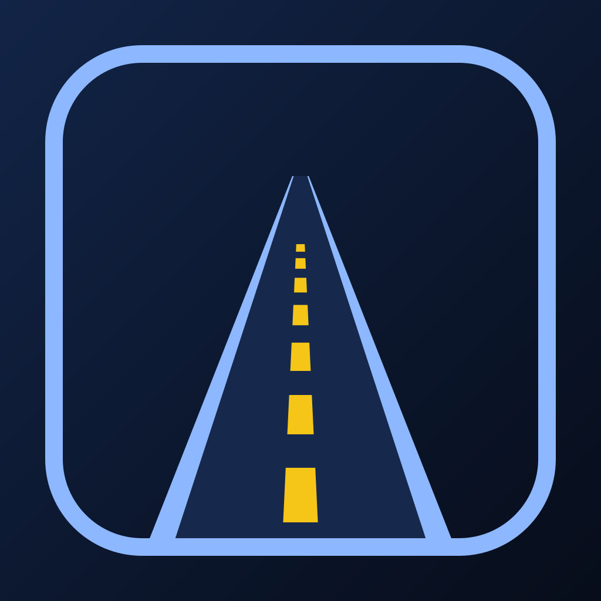

Designprofil
Visuell profil 2.0 · fra versjon 0.19.0
Skilt og vei
Kjørerapport henter uttrykket fra norske veier: blå opplysningsskilt med hvit kantlinje, gul midtlinje på mørk asfalt og en skrift som bygger på skiltskrift. Roen kommer fra luft og hvite kort. Kraften kommer fra ett blått skilt per skjerm.
Siden bruker appens egne stilark. Fargene og kortene under er derfor de samme som i appen, og de skifter med lys og mørk modus.
1. Idé og stemning
Hvem appen er for: elever på 16–18 år, ledsageren (ofte en forelder) og trafikklæreren. De skal føle seg trygge, få ros når det går bra og se tydelig hva de skal øve på.
Hvorfor vei og skilt: alt i appen handler om veien. Norske opplysningsskilt er blå med hvit kantlinje, og midtlinja er gul. Det gjør profilen gjenkjennelig og norsk uten å låne fra andre apper.
Kjennetegnet er skiltkortet: et blått kort med hvit kantlinje innenfor kanten, slik som på et ekte skilt. Det brukes bare én gang per skjerm, så det alltid viser det viktigste.
2. Farger
Én farge betyr én ting. Tallene viser kontrasten mot hvitt kort (lys) og mørkt kort (mørk). Krav: minst 4,5:1 for vanlig tekst.
- Veiblå
Merkefarge. Skiltkortet, lenker, valgt fane og knapper du kan trykke på.
#0B4CB4 · 7,8:1mørk: flate #0E45A8, tekst #8DB8FF · 8,7:1 - Midtlinjegul
Hovedhandling. Bare den ene viktigste knappen på skjermen, og veistriper.
#F5C518 · tekst #0F1A2B 10,7:1 - Blekk
Tekst. Nesten svart med et blått skjær.
#0F1A2B · 17,5:1mørk: #E9EEF6 · 15:1 - Grå tekst
Forklaringer og etiketter.
#4B586B · 7,2:1mørk: #A3B0C4 · 8:1 - Dagslys
Bakgrunn. Svakt blått skjær.
#EEF2F8 · mørk: #080D17 - Kort
Innhold. Hvite kort, mørkeblå i mørk modus.
#FFFFFF · mørk: #111A28
Signalfarger brukes bare for det de betyr, aldri som pynt:
- Grønn
Bra, nådd, riktig.
#23784A · 5,4:1 - Rød
Brå bremsing, feil, slett.
#C0392B · 5,4:1 - Oransje
Svinger og varsler.
#A15C0B · 5,2:1 - Fiolett
Akselerasjon.
#6941C6 - Blågrønn
Nøytrale diagrammer, som minutter per uke.
#0E7C86 · 4,95:1
Fordeling
Som tommelfingerregel: omtrent 60 % lys bakgrunn og hvite kort, 30 % tekst og veiblått, og under 10 % gult. Gult blir sterkt nettopp fordi det er lite av det.
3. Skrift
Overpass, én skriftfamilie i hele appen. Den bygger på Highway Gothic, skriften på amerikanske veiskilt, og passer derfor til en app om kjøring. Teksten følger tekststørrelsen i iPhonens innstillinger.
Turer
3 t 54 min
Siste åtte uker
Se langt fram og slipp gassen tidlig.
11 min · 8,9 km
Siste tur
Regel: høyst tre størrelser i ett kort. Tall står med like brede sifre, så de ikke hopper når de endrer seg.
4. Hierarki
Alt kan ikke være like viktig. Appen har fire nivåer, og hvert nivå ser annerledes ut:
Nivå 1 · Skiltkort
Det skjermen er til for. Ett per skjerm. Hjem: start tur. Turer: kjøreloggen. Rapport: poengsummen. Opplæring: fremdriften.
Nivå 2 · Kort
Innholdet: siste tur, utvikling, statistikk. Hvitt kort med tittel øverst. Kort som fører videre, har en blå lenke nederst («Se rapporten ›»).
Nivå 3 · Rader
- I dag, 15:1611 min · 8,9 km
- Man. 9. nov., 15:3411 min · 8,9 km
5. Regler
- Viktigst øverst. Folk leser ovenfra og ned. Svaret på «hva er denne skjermen til?» står først.
- Ett skiltkort per skjerm. Blir alt fremhevet, blir ingenting det.
- Én gul knapp per skjerm. Den gule er hovedhandlingen. Andre knapper er tonet blå, og mindre viktige valg er blå lenker.
- Én farge, én betydning. Blått kan trykkes på, grønt er bra, rødt er brå bremsing eller feil. Farge er aldri eneste kjennetegn: det står alltid tekst eller et ikon i tillegg.
- Vis lite først. De fem siste turene står framme, resten ligger bak «Vis alle». Forklaringer ligger bak «Slik regnes det».
- Samle det som hører sammen. Veityper, lys og føre er ett kort, ikke tre. Mer luft mellom grupper enn inne i dem.
- Systembeskjeder er små. Sikkerhetskopi og «Legg til på Hjem-skjerm» er tonede merknader, ikke store kort over innholdet.
- Logoen bare på Hjem. Andre skjermer har en stor tittel i stedet. Ingen trenger å bli minnet på hvilken app de bruker.
- Avstand i faste trinn: 4, 8, 12, 16, 24 og 32 px. Kort har 16–22 px luft inni og 14–16 px mellom seg.
- Lys og mørk modus, alltid. Mørk modus er «nattkjøring»: mørk blå i stedet for grå. All tekst holder minst 4,5:1, også i mørk modus.
6. Knapper
Alle trykkflater er minst 44 px høye. Under kjøring er knappene større.
7. App-ikonet

Ikonet er skiltkortet fra appen: veiblått med hvit kantlinje innenfor kanten, og en vei mot horisonten med gul midtlinje. Det er laget av rene, flate former uten skygger og glans, fordi iPhonen legger på lys og skygge selv.
Filer: designprofil/ikon-iphone.svg og ikon-iphone-mork.svg (hel flate, iPhonen runder hjørnene), icons/icon.svg (med runde hjørner, for nettet og appen). Den mørke versjonen bruker nattblå bakgrunn og lyseblå linjer.
8. Skjermene
| Skjerm | Skiltkort | Så kommer |
|---|---|---|
| Hjem | Start kjøretur | Siste tur, nivå, øving, teori, utvikling |
| Turer | Kjøreloggen (tid, km, turer, mørke) | Fem siste turer, statistikk, faresteder |
| Rapport | Poengsum og stikkord | Nytt på turen, kort fortalt, neste øvingstur, kart |
| Opplæring: Teori og sikkerhet | Teoriprøven, dagsmålet og dager på rad | Fire snarveier med bilder, fra turene, temaene |
| Opplæring: Læreplan | Punkter krysset av | Punktene i læreplanen |
| Skiltprøven, sikkerhetskontrollen | Hvor mye du kan | Skiltene, oppgavene |
| Guide, Trafikklærer | Ingen ennå | Vanlige kort |
9. Kilder
- Apple Human Interface Guidelines: Color, Branding, Layout, Typography og Dark Mode (developer.apple.com/design/human-interface-guidelines).
- Nielsen Norman Group: «5 Principles of Visual Design in UX» (nngroup.com/articles/principles-visual-design).
- Google Material Design 3: fargeroller og tonepaletter (m3.material.io).
- Statens vegvesen: «Filer og fargekoder for trafikkskilt» (vegvesen.no). Veiblått og gult har skiltfargene PMS 293 (blå) og 130 (gul) som utgangspunkt, tilpasset skjerm og kontrastkravene.
Fargeverdiene ligger i css/theme.css. Endres de der, endres både appen og denne siden.